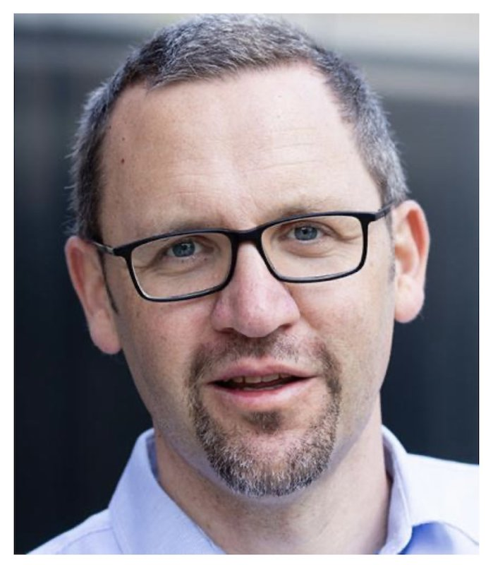
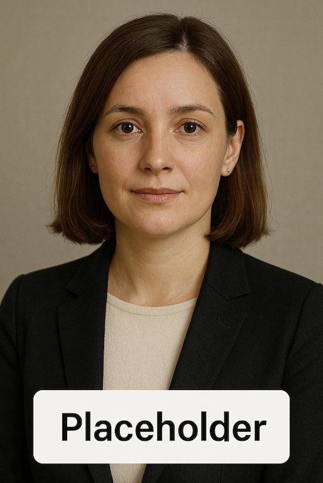

Podcasts – Conversations that matter

Podcast April 2025 – Severin Broucek
CEO of Teach For Austria. Podcast covers:
• Biggest obstacles in Austrian education system
• Empowering teachers
• System reforms
• International comparisons
• Ensuring equal quality education for all

Podcast May 2025 – Ines Fratzl (asked)
Author and work psychologist. Podcast covers:
• Structural inequalities in Austria
• Role of social background
• Reform proposals
• Inclusion strategies
• Practical actions for teachers and schools